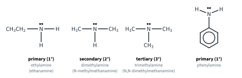
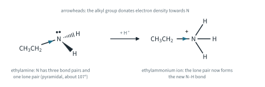
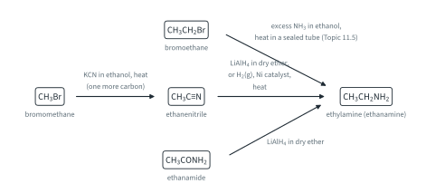
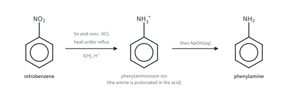
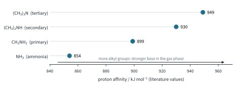
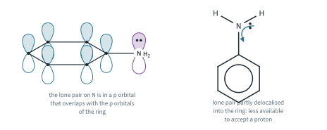
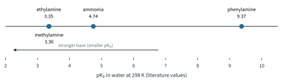
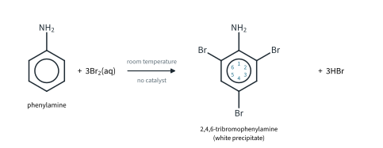

Nitrogen Compounds 1
Topic 11.9 · Nitrogen Compounds Part 1
On this page
Introduction
Nitrogen turns up in a surprising number of organic compounds: in dyes, in almost every drug on the pharmacy shelf, in nylon, and in every protein in your body. This topic covers three families. Part 1 is about the amines, which behave as organic versions of ammonia. Part 2 is about the amides, which look similar but are not basic at all, and the amino acids, which carry an acid group and a base group in the same molecule.
Amines can be thought of as ammonia molecules in which one or more of the H atoms have been replaced by alkyl or aryl groups. They are classed by the number of carbon atoms bonded to the nitrogen (the footnote in Topic 11.3 made the same point): a primary (1°) amine is RNH2, a secondary (2°) amine is R2NH and a tertiary (3°) amine is R3N.1 Phenylamine, C6H5NH2, has its N attached directly to a benzene ring; it is a primary amine (Fig 1).2

Amines are named either as alkylamines (ethylamine) or as alkanamines (ethanamine) (Topic 11.1 Part 1). The 9476 syllabus uses ethylamine and phenylamine; both names are given for the alkylamines on first use. The N-locant says that a group is on the nitrogen: (CH3)2NH is dimethylamine, or N-methylmethanamine.
The nitrogen lone pair
The nitrogen atom in an amine is sp3 hybridised (Topic 11.1 Part 1). It has three bond pairs and one lone pair, so, like NH3, it is trigonal pyramidal, with bond angles of about 107° (Fig 2). Almost all of the chemistry of amines comes from that lone pair:
- An amine is a base. It accepts a proton (a Brønsted-Lowry base), which means it donates its lone pair to H+ to form a dative covalent (co-ordinate) bond (a Lewis base). Both definitions are in Topic 4.
- An amine is a nucleophile (Topic 11.3). Its lone pair attacks δ+ carbon atoms: the carbon of a halogenoalkane (Topic 11.5) and the carbonyl carbon of an acyl chloride (Part 2 and Topic 11.8 Part 2).
Physical properties (Further example)
Primary and secondary amines have N–H bonds, so their molecules hydrogen bond to one another and to water (Topic 2). The small amines are very soluble in water. Ethylamine boils at 17 °C (literature value): it is a gas at room temperature, so in the laboratory it is used as an aqueous or ethanolic solution. Phenylamine is a colourless liquid (b.p. 184 °C) that is only slightly soluble in water, about 36 g dm−3 at 20 °C, because of its large non-polar ring (literature values). The simple amines smell of fish; it is a smell you will not forget.

Formation of amines
There are three routes to ethylamine, one of them from Topic 11.5, and one route to phenylamine. In each the nitrogen is already in the molecule: we either reduce a group that contains N, or substitute N into the molecule as ammonia.
From halogenoalkanes
This is covered in Topic 11.5. Ammonia is a nucleophile and substitutes for the halogen; the conditions are excess NH3 in ethanol, heat in a sealed tube (a sealed tube, because ammonia would otherwise boil off):
CH3CH2Br + 2NH3 → CH3CH2NH2 + NH4Br
The amine has the same number of carbon atoms as the halogenoalkane. The drawback is that ethylamine is itself a nucleophile, so it competes with ammonia for the bromoethane, and some (CH3CH2)2NH, (CH3CH2)3N and even (CH3CH2)4N+Br− form. A large excess of ammonia makes these further substitutions less likely, but the product is still a mixture.
Reduction of nitriles
A nitrile, R–C≡N, is reduced to a primary amine, RCH2NH2. Either reducing agent will do. [H] stands for hydrogen from the reducing agent (Topic 11.3):
CH3C≡N + 4[H] → CH3CH2NH2 LiAlH4 in dry ether
CH3C≡N + 2H2 → CH3CH2NH2 H2(g), Ni catalyst, heat
Nitriles are made from halogenoalkanes and KCN in ethanol, heat (Topic 11.5), which adds a carbon atom. So this route gives an amine with one more carbon than the halogenoalkane you started from. (Nitriles can also be hydrolysed to carboxylic acids: Topic 11.8 Part 1.)
Reduction of amides
LiAlH4 also reduces an amide. The C=O group becomes CH2, and the nitrogen stays where it is:
CH3CONH2 + 4[H] → CH3CH2NH2 + H2O LiAlH4 in dry ether
We come back to this reaction in Part 2, where amides are the main subject.
Worked example 1
Suggest a two-step synthesis of ethylamine from bromomethane, giving reagents and conditions. Why does it give a purer product than making ethylamine from bromoethane and ammonia?
(To answer this, count the carbons first. Bromomethane has one carbon and ethylamine has two, so one step must add a carbon. The only way you know to add a carbon to a halogenoalkane is with cyanide.)
Step 1: bromomethane with KCN in ethanol, heat: CH3Br + KCN → CH3CN + KBr. Step 2: reduce the ethanenitrile with LiAlH4 in dry ether, or with H2(g), Ni catalyst, heat: CH3CN + 4[H] → CH3CH2NH2.
The nitrile can only be reduced to one amine, the primary amine. In the ammonia route the ethylamine formed can react again with bromoethane, so secondary and tertiary amines (and the quaternary salt) contaminate the product.
Fig 3 puts the three routes to ethylamine side by side.

Phenylamine from nitrobenzene
Nitrobenzene is made by nitrating benzene (Topic 11.4 Part 2). It is reduced to phenylamine with tin and concentrated hydrochloric acid. The conditions are: Sn and conc. HCl, heat under reflux, then NaOH(aq). Written with [H], the overall equation is:
C6H5NO2 + 6[H] → C6H5NH2 + 2H2O
The nitro group loses both its oxygen atoms and gains two hydrogen atoms: it is a reduction, and tin is the reducing agent. Why is the NaOH(aq) needed? The reduction is carried out in a large excess of strong acid. Phenylamine is a base, so as soon as it forms it is protonated, and what is in the flask at the end of the reflux is the phenylammonium ion, C6H5NH3+, not phenylamine. Adding excess NaOH(aq) removes the proton and sets the amine free:
C6H5NH3+(aq) + OH−(aq) → C6H5NH2(l) + H2O(l)
As this happens the clear solution turns cloudy and oily drops of phenylamine separate (Fig 4).3 This is the salt chemistry of the next section, in reverse.

Worked example 2
12.3 g of nitrobenzene was reduced with tin and concentrated hydrochloric acid, and 6.51 g of phenylamine was obtained after adding NaOH(aq) and purifying. Calculate the percentage yield. (Illustrative data; Ar: H 1.0, C 12.0, N 14.0, O 16.0.)
(To find a percentage yield, you need the mass of product that 12.3 g could have given. The equation is 1 : 1, so work in moles.)
Mr(C6H5NO2) = 123.0 n = 12.3 / 123.0 = 0.100 mol
Mr(C6H5NH2) = 93.0 maximum mass = 0.100 × 93.0 = 9.30 g
percentage yield = (6.51 / 9.30) × 100 = 70.0 %
Salt formation
Amines are weak bases, like ammonia. In water a small fraction of the amine molecules accept a proton from water, so the solution is alkaline and turns red litmus blue:
CH3CH2NH2(aq) + H2O(l) ⇌ CH3CH2NH3+(aq) + OH−(aq)
With an acid the reaction goes to completion, and an alkylammonium salt forms, in exactly the way that ammonia forms ammonium salts:
CH3CH2NH2 + HCl → CH3CH2NH3+Cl− (ethylammonium chloride)
2CH3CH2NH2 + H2SO4 → (CH3CH2NH3+)2SO42− (ethylammonium sulfate)
C6H5NH2 + HCl → C6H5NH3+Cl− (phenylammonium chloride)
The ionic equation is the same in every case: RNH2(aq) + H+(aq) → RNH3+(aq). You can see the change with phenylamine. Shaken with water it gives a cloudy, oily mixture, because it is only slightly soluble. Add dilute HCl(aq) and it dissolves to a clear solution of phenylammonium chloride. Add NaOH(aq) and it turns cloudy again, because the strong base takes the proton back:
C6H5NH3+(aq) + OH−(aq) → C6H5NH2(l) + H2O(l)
In the same way, warming any alkylammonium salt with NaOH(aq) releases the amine, which you can smell and which turns damp red litmus blue, just as an ammonium salt releases ammonia.
Turning an amine into a salt and back is used all the time: to make a drug dissolve (Topic 10 Part 1, In industry) and to separate an amine from neutral compounds (Topic 10 Part 2, In industry).
Basicity of amines in the gas phase
How strong a base is an amine? To answer that cleanly, take away the solvent. In the gas phase, the only thing that matters is how readily the amine's lone pair forms a bond to a proton: the amine is acting as a Lewis base, an electron-pair donor (Topic 4; NH3 donating its lone pair to BF3 is the same idea). The measure is the proton affinity, the energy released when one mole of the gaseous base accepts a proton:4
B(g) + H+(g) → BH+(g) ΔH = −(proton affinity)
The larger the proton affinity, the more energy is released, and the stronger the base. Literature values (NIST), also plotted in Fig 5:
| Base | Class | Proton affinity / kJ mol−1 |
|---|---|---|
| ammonia, NH3 | (no alkyl groups) | 854 |
| methylamine (methanamine), CH3NH2 | primary | 899 |
| dimethylamine (N-methylmethanamine), (CH3)2NH | secondary | 930 |
| trimethylamine (N,N-dimethylmethanamine), (CH3)3N | tertiary | 949 |

Each alkyl group makes the amine a stronger base, for two reasons:
- Alkyl groups are electron-donating (the inductive effect, Topic 11.3). They push electron density towards the nitrogen, so the lone pair is richer in electrons and more available to be donated to a proton.
- The cation is stabilised. In RNH3+, R2NH2+ and R3NH+, the electron-donating alkyl groups spread out the positive charge on the nitrogen (Fig 2), just as they stabilise a tertiary carbocation (Topic 11.3). A more stable product means a more exothermic protonation.
Basicity in aqueous solution
In water, base strength is measured by Kb (Topic 10 Part 1): the larger Kb, or the smaller pKb, the stronger the base.
B(aq) + H2O(l) ⇌ BH+(aq) + OH−(aq) Kb = [BH+][OH−] / [B]
The syllabus compares ammonia, ethylamine and phenylamine (literature values at 298 K):
| Base | Kb / mol dm−3 | pKb | pKa of the conjugate acid |
|---|---|---|---|
| ethylamine (ethanamine), CH3CH2NH2 | 4.5 × 10−4 | 3.35 | 10.65 |
| methylamine (methanamine), CH3NH2 | 4.4 × 10−4 | 3.36 | 10.64 |
| ammonia, NH3 | 1.8 × 10−5 | 4.74 | 9.26 |
| phenylamine, C6H5NH2 | 4.3 × 10−10 | 9.37 | 4.63 |
The table adds methylamine, from Topic 10 Part 1, so that it can be set beside the gas-phase values in Fig 5. So in water the order is ethylamine > ammonia > phenylamine.
Ethylamine is a stronger base than ammonia
The reasons are the ones from the gas phase. The ethyl group is electron-donating, so the lone pair on the nitrogen of ethylamine is more available to accept a proton than the lone pair of ammonia, and the ethylammonium ion is stabilised by the spreading of its positive charge. Kb for ethylamine is about 25 times that of ammonia.
Phenylamine is a much weaker base than ammonia
In phenylamine the nitrogen is attached directly to the benzene ring. The lone pair on the nitrogen sits in an orbital with p character that overlaps with the delocalised π system of the ring (Fig 6). The lone pair is partly delocalised into the ring, so there is less electron density on the nitrogen, and the lone pair is less available to accept a proton. Accepting a proton would also cost the molecule this extra delocalisation, because the lone pair would then be tied up in an N–H bond. Kb for phenylamine is about 40 000 times smaller than for ammonia.

You have met the same overlap twice already: the Cl lone pair of chlorobenzene (Topic 11.3) and the O lone pair of phenol (Topic 11.6 Part 2). Fig 7 shows the three bases on one scale.

Worked example 3
Calculate the pH of 0.200 mol dm−3 aqueous solutions of ammonia, ethylamine and phenylamine at 298 K, using the Kb values above. Check that the approximation is valid each time.
(This is the weak base calculation from Topic 10 Part 1: [OH−] = √(Kb × c), then pOH, then pH = 14.00 − pOH.)
| Base | [OH−] / mol dm−3 | % reacted | pOH | pH |
|---|---|---|---|---|
| ammonia | √(1.8 × 10−5 × 0.200) = 1.90 × 10−3 | 0.95 % | 2.72 | 11.28 |
| ethylamine | √(4.5 × 10−4 × 0.200) = 9.49 × 10−3 | 4.7 % | 2.02 | 11.98 |
| phenylamine | √(4.3 × 10−10 × 0.200) = 9.27 × 10−6 | 0.0046 % | 5.03 | 8.97 |
All three are under 5 % reacted, so the approximation holds. (Ethylamine only just passes: at 0.100 mol dm−3 it would be 6.7 % reacted, and the simple formula would not be good enough.) The same concentration of the three bases spans three pH units, and phenylamine's solution is only weakly alkaline.
Phenylamine with aqueous bromine
Benzene reacts with bromine only when a halogen carrier such as AlBr3 is added to make a stronger electrophile, and it gives a single substitution product, bromobenzene (Topic 11.4 Part 2). Phenylamine is completely different. Add aqueous bromine (bromine water) to aqueous phenylamine at room temperature, with no catalyst: the orange bromine water is decolourised at once and a white precipitate of 2,4,6-tribromophenylamine forms (Fig 8).
C6H5NH2 + 3Br2(aq) → C6H2Br3NH2 + 3HBr

The reason is the same overlap that makes phenylamine a weak base (Fig 6). The lone pair on the nitrogen is partly delocalised into the ring, which increases the electron density of the ring, especially at positions 2, 4 and 6. The ring is activated: it is now electron-rich enough to polarise a Br2 molecule and attack its Brδ+ end without a halogen carrier, and the substitution happens at all three activated positions. The mechanism is electrophilic substitution, exactly as for benzene in Topic 11.3, repeated three times.
Phenol reacts with bromine water in the same way, for the same reason: the lone pair on its oxygen is delocalised into the ring (Topic 11.6 Part 2). The benzene reaction in the table needs anhydrous conditions, because AlBr3 is destroyed by water.
| Compound | Reagent and conditions | Product | Observation |
|---|---|---|---|
| benzene | Br2, AlBr3 catalyst, room temperature | bromobenzene | bromine colour fades; steamy fumes of HBr |
| phenol | Br2(aq) (bromine water), room temperature | 2,4,6-tribromophenol | orange bromine water decolourised; white precipitate |
| phenylamine | Br2(aq) (bromine water), room temperature | 2,4,6-tribromophenylamine | orange bromine water decolourised; white precipitate |
Worked example 4
0.465 g of phenylamine is treated with excess bromine water. Calculate the mass of precipitate formed and the minimum mass of bromine needed. (Ar: H 1.0, C 12.0, N 14.0, Br 79.9.)
n(C6H5NH2) = 0.465 / 93.0 = 0.00500 mol
Mr(C6H2Br3NH2) = 329.7 mass of precipitate = 0.00500 × 329.7 = 1.65 g
n(Br2) = 3 × 0.00500 = 0.0150 mol mass of Br2 = 0.0150 × 159.8 = 2.40 g
Summary
| Reaction | Reagents and conditions | Product |
|---|---|---|
| CH3CH2Br → ethylamine (Topic 11.5) | excess NH3 in ethanol, heat in a sealed tube | CH3CH2NH2 (with 2° and 3° amines) |
| CH3C≡N → ethylamine | LiAlH4 in dry ether; or H2(g), Ni catalyst, heat | CH3CH2NH2 |
| CH3CONH2 → ethylamine | LiAlH4 in dry ether | CH3CH2NH2 |
| C6H5NO2 → phenylamine | Sn and conc. HCl, heat under reflux, then NaOH(aq) | C6H5NH2 |
| amine + acid | e.g. HCl(aq), room temperature | alkylammonium salt, e.g. CH3CH2NH3+Cl− |
| alkylammonium salt + base | NaOH(aq), warm | the amine |
| phenylamine + bromine | Br2(aq) (bromine water), room temperature | 2,4,6-tribromophenylamine (white precipitate) |
Additional information
- Beyond the syllabus: a nitrogen can also carry four alkyl groups, as in (CH3CH2)4N+Br−. These quaternary ammonium salts have no lone pair left and are not bases (Topic 11.5). ↩
- Phenylamine is also called aniline, the name used in industry and in many older books. ↩
- Beyond the syllabus: the excess NaOH(aq) also redissolves the tin compounds formed in the reduction. Phenylamine is then separated from the mixture by steam distillation. ↩
- Proton affinity is defined as −ΔH for the reaction, so it is a positive number. You do not need to recall any values. ↩